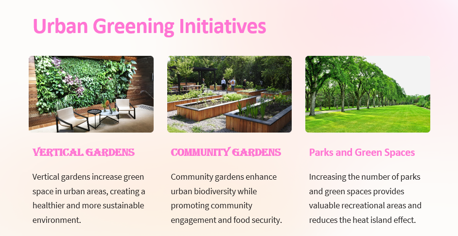
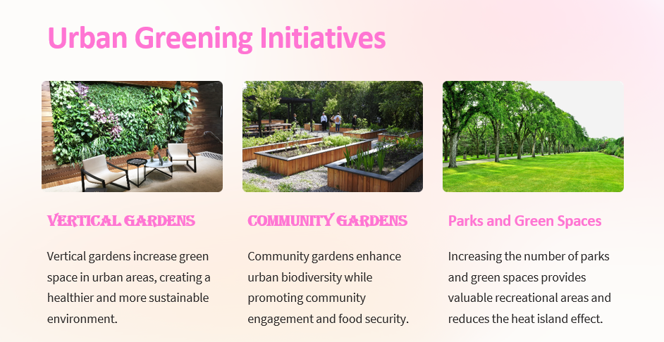
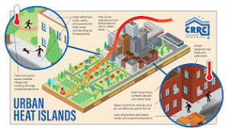
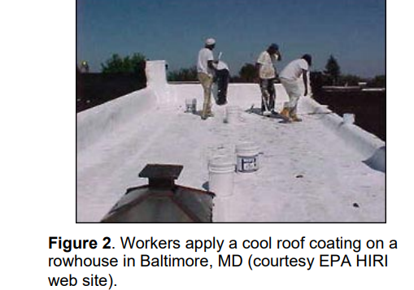
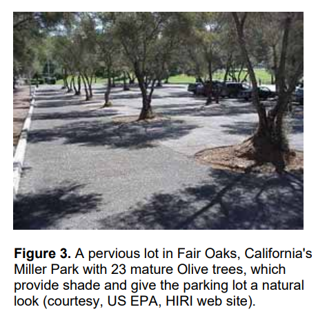
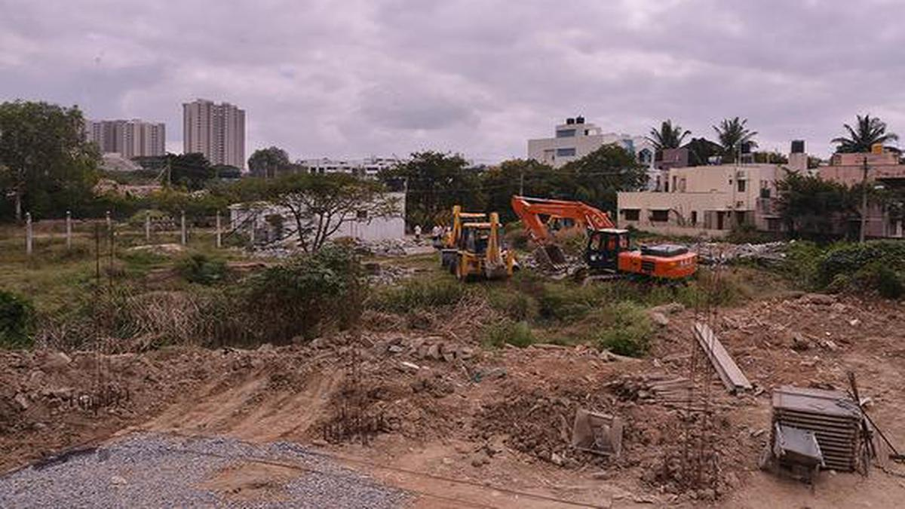
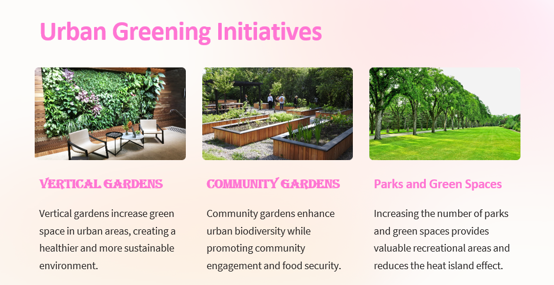

 As illustrated in Fig. 1 the urban energy balance is driven by shortwave radiative input from the sun. In midlatitudes the summer midday shortwave flux may exceed 1000 W/m2 . As the shortwave radiation reaches surfaces in the urban environment it is partially absorbed and partially reflected. The ratio of reflected to total incoming solar radiative heat flux is referred to as the radiation. It is important to note that solar radiation spans the frequency spectrum with most of the sun’s energy content being concentrated in the shortwave (0.4 to 0.7 µm) visible range. Hence high altitude surfaces are generally characterized by being light in color, or white. One key cause of heat islands is that cities tend to have lower albedos than the unbuilt surroundings Compounding this albedo difference is the underlying morphology of cities When solar radiation is reflected from a street surface some of it escapes the urban canopy, but some (depending upon the sky view factor) is intercepted and partially absorbed by exterior building walls. Figure 1. A simplified model of the urban energy balance including anthropogenic heating as a source term (Qf). The surface complexity introduced by urban morphology also affects long wave radiative exchange. All surfaces emit radiation as a function of their absolute temperature (raised to the 4th power). For surfaces with temperatures typically encountered in the urban environment (e.g., 0 to 60 o C) this energy is concentrated in the longwave spectrum (peaking at wavelengths of about 10 µm). Longwave radiative emission is a key mechanism whereby surfaces cool themselves at night. In an urban setting, however, longwave emission from one surface is often intercepted by many other urban surfaces. The net effect is that urban surfaces with their reduced sky view factor tend to cool off slowly at night. Another key component of the urban energy balance is the prevalence of impervious surfaces and general lack of vegetation in urban settings. The complexity of urban canyons also has a complex effect on localized wind speeds, and hence on sensible (convective) heat loss of surfaces. Convective heat transfer from some surfaces is enhanced due to the wind channeling effect through urban canyons.
The urban heat island exists in both summer and winter seasons. In fact, it is generally largest in the winter when it has some beneficial characteristics related to reducing the demand for heating energy. In summer, however, the existence of the heat island has negative implications in three key areas – air quality, human health, and energy consumption for air conditioning. It is this summertime heat island that generally spawns an interest in mitigation. 3.1 Albedo The primary surfaces in the urban environment that are amenable to albedo increase are rooftops, roadways, and parking lots. 3.1.1 Roofing There are a wide range of materials used for roofing. For example, the Cool Roofing Material Database (http://eetd.lbl.gov/CoolRoofs) compiled by Lawrence Berkeley National Labs indicates that light gray to white asphalt shingles with albedos ranging from 0.22 to 0.36 exist in the marketplace. For further details regarding albedo, emissivity, and related properties of a wide range of roofing materials the interested reader is referred to the Cool Roofing Material Database (http://eetd.lbl.gov/CoolRoofs). Convective characteristics of roofing systems can also play a role in their overall effectiveness as a mitigation strategy. Roofing systems with larger surface areas exposed to the outside air (e.g. wood shake systems) can enhance convection. 3.2 Direct and Indirect Effects of Mitigation These mitigation strategies can have impacts that range from localized effects to effects that are manifested at scales as large as the city. For example, implementing a high albedo roof on a commercial building has the direct effect of reducing the solar load on the building, and hence reducing summertime energy demand for that building. The same roof, however, also plays a small role in the urban climate system as a whole. Since the rooftop surface is cooler there is less convective heating of the air that flows over the building. The presence of many high albedo roofs within a city can, in theory, indirectly benefit the entire city through the combined air temperature reduction effects. While the direct effects can generally be measured the indirect effects must typically be estimated through large scale atmospheric model simulations (e.g., Sailor, 1998; Taha et al., 1999; Kikegawa et al., 2004). 
4.1 Cool Roofing The commercial roofing market is largely composed of flat roofs that are relatively isolated from the public view. The residential market, however, with its traditional sloped roofs must consider aesthetics as a key implementation barrier .Darker roofs ranging from black asphalt shingles to wood shakes are often preferred by residential customers. This is likely due in part to their ability to hide dirt, moss, and other weathering characteristics. In many cases these darker surfaces also serve to help blend the house into the natural setting (e.g. cedar shingles).The Cool Roof Rating Council (CRRC) is an independent and non-biased organization that has established a system for providing Building Code Bodies, Energy Service Providers, Architects & Specifiers, Property Owners and Community Planners with accurate radiative property data on roof surfaces that may improve the energy efficiency of buildings while positively impacting our environment (www.coolroofs.org).
 Why are our cities warmer than their suburbs and rural areas?
n a densely populated city is as much as 2 degrees higher than suburban or rural areas. A recent study from IIT Kharagpur called “Anthropogenic forcing exacerbating the urban heat islands in India” noted that the relatively warmer temperature in urban areas, compared to suburbs, may contain potential health hazards due to heat waves apart from pollution. Arun Chakraborty an author of the study said, “Our research is a detailed and careful analysis of urban heat islands in India. We study the difference between urban and surrounding rural land surface temperatures, across all seasons in 44 major cities from 2001 to 2017.” He further said, “For the first time, we have found evidence of mean daytime temperature of surface urban heat island (UHI Intensity) going up to 2 degrees C for most cities, as analysed from satellite temperature measurements in monsoon and post monsoon periods.” Other researchers from elsewhere have also noticed similar rise in daytime temperatures in Delhi, Mumbai, Bengaluru, Hyderabad and Chennai. We know of urban water lakes (as in Bhopal, Hyderabad, Bengaluru or Srinagar) which add pleasure and coolness, but an urban heat island? An urban heat island (abbreviated as UHI) is where the temperature in a densely populated city is as much as 2 degrees higher than suburban or rural areas. Why? This happens because of the materials used for pavements, roads and roofs, such as concrete, asphalt (tar) and bricks, which are opaque, do not transmit light, but have higher heat capacity and thermal conductivity than rural areas, which have more open space, trees and grass. Trees and plants are characterised by their ‘evapotranspiration’— a combination of words wherein evaporation involves the movement of water to the surrounding air, and transpiration refers to the movement of water within a plant and the subsequent lot of water through the stomata (pores found on the leaf surface) in its leaves. Grass, plants and trees in the suburbs and rural areas do this. The lack of such evapotranspiration in the city leads to the city experiencing higher temperature than its surroundings. Click here for refernce
Manifold increase in construction activities: For building simple urban dwellings to complex infrastructures, carbon absorbing material like asphalt and concrete is needed for the expansion of cities. They trap huge amounts of heat which increases the mean surface temperatures of urban areas. Dark surfaces: Many buildings found in urban areas have dark surfaces, thereby decreasing albedo and increased absorption of heat. Air conditioning: Buildings with dark surfaces heat up more rapidly and require more cooling from air conditioning, which requires more energy from power plants, which causes more pollution. Also, air conditioners exchange heat with atmospheric air, causing further local heating. Thus, there is a cascade effect that contributes to the expansion of urban heat islands. Urban Architecture: Tall buildings, and often accompanying narrow streets, hinder the circulation of air, reduce the wind speed, and thus reduce any natural cooling effects. This is called the Urban Canyon Effect. Need for mass transportation system: Transportation systems and the unimpeded use of fossil fuels also add warmth to urban areas. Lack of Trees and green areas: which impedes evapotranspiration, shade and removal of carbon dioxide, all the processes that help to cool the surrounding air. Click here for reference
Union Minister of State (Independent Charge) Science & Technology; Minister of State (Independent Charge) Earth Sciences; MoS PMO, Personnel, Public Grievances, Pensions, Atomic Energy and Space, Dr Jitendra Singh said, the steep rise in pre-monsoon surface air temperature, land surface temperature and relative humidity in Delhi/NCR off late is a cause of concern. In reply to a question in the Rajya today, Dr Jitendra Singh in a statement laid on the table of the House said, there has been a rise in Maximum and Minimum temperature over Delhi during Pre monsoon season during last three years whereas there is no such increase in Relative Humidity. The details of average values of maximum and minimum temperature and relative humidity (RH) over Delhi during the season for the last three years with respect to Safdarjung station are given below through the link: Government data
Incentivize Green Roofs: Implement policies that encourage the installation of green roofs on new and existing buildings. Promote Cool Pavements: Mandate or incentivize the use of cool pavements for roads, parking lots, and other paved surfaces. Expand Urban Forestry: Implement tree-planting programs and promote urban green spaces to increase vegetation cover in cities. Increase Permeable Surfaces: Encourage the use of permeable materials for sidewalks, parking lots, and other paved areas. Adopt Sustainable Urban Design: Incorporate passive cooling principles into urban planning guidelines and regulations. Monitor and Evaluate: Continuously monitor the effectiveness of implemented heat reduction strategies and make adjustments as needed.
The project aims to deliver a highly specific blueprint for mitigating urban heat islands, providing decision-makers with targeted and actionable insights. The outcome includes an exhaustive literature review, a detailed analysis of specific successful case studies, and expert-backed recommendations. The focus is on creating urban environments that are not only cooler but also tailored to the unique challenges of each community, promoting sustainability and comfort.

The intense heat trapped within urban environments due to factors such as urbanization, lack of vegetation, and heat-retaining materials has wide-ranging impacts on energy consumption, human health, air quality, and the environment.
https://www.researchgate.net/profile/Md-Nuruzzaman-12/publication/283507719_Urban_Heat_Island_Causes_Effects_and_Mitigation_Measures_-A_Review/links/563c573708ae34e98c485eb0/Urban-Heat-Island-Causes-Effects-and-Mitigation-Measures-A-Review.pdf
https://www.sciencedirect.com/science/article/pii/S0301479717303201
https://www.sciencedirect.com/science/article/pii/S1001074208600194
https://www.sciencedirect.com/science/article/pii/S0264275116305303
https://www.sciencedirect.com/science/article/pii/037877889500927P
https://www.pavetechinc.com/uhi-mitigation